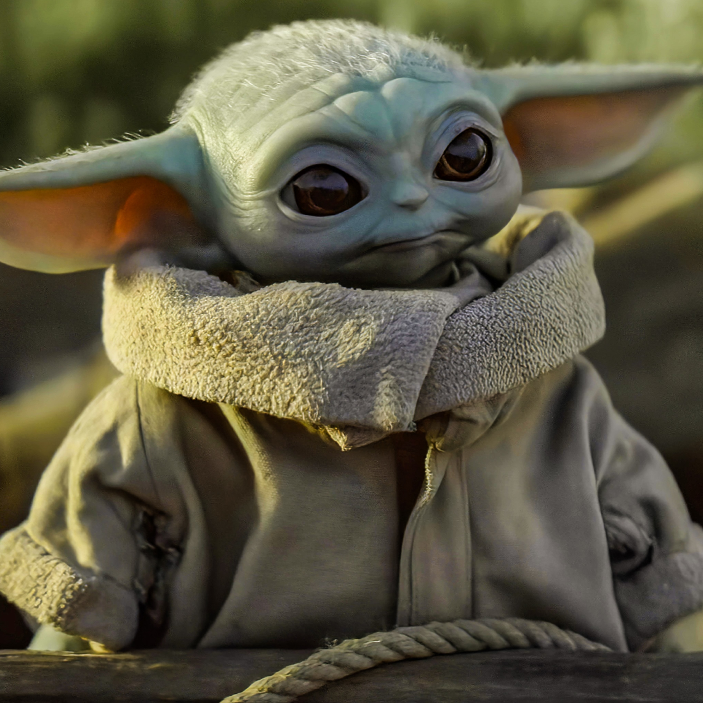

With his customized Mandalorian armor, deadly weaponry, and silent demeanor, Boba Fett was one of the most feared bounty hunters in the galaxy. A genetic clone of his 'father,' bounty hunter Jango Fett, Boba learned combat and martial skills from a young age.

Grogu, colloquially referred to as Baby Yoda, is a character from the Star Wars Disney+ original television series The Mandalorian. He is a toddler member of the same unnamed species as the Star Wars characters Yoda and Yaddle, with whom he shares a strong ability in the Force.
